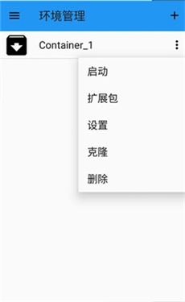
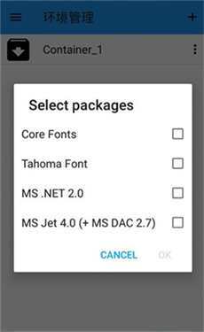

高铁上的红警指挥官：我是怎么在手机上找回十年前的周末的
一个出差路上的偶然发现，让我在 Android 上跑起了当年攒零花钱买的红警 2 和英雄无敌 3。从拷文件到调按键，记录一下这套老游戏的新活法。
那个下午的高铁
上周去上海出差，回程买了趟慢车，五个半小时坐得我腿都麻了。背包里只有一台手机、一个充电宝，电脑嫌重没带——本来打算刷完那部拖了两个月的纪录片，结果点开 B 站一看，缓存没下完。
百无聊赖翻应用市场的时候，手指划到了一个没见过的图标：一个蓝色的窗口，名字叫 ExaGear。简介写着「在 Android 上运行 Windows 应用和经典 PC 游戏」。
我第一反应是扯淡。手机跑 Windows 程序？虚拟机吗？几年前试过什么 Wine for Android，卡得像 PPT 翻页，玩个扫雷都能暖手。
但闲也是闲着，就点了安装。
从一张旧光盘说起
从官方下载拿包的过程我在想，手机上真要能跑点什么，我电脑硬盘里还真存着几样宝贝——都是大学时候攒下来的：红警 2 尤里复仇、英雄无敌 3 死亡阴影、暗黑破坏神 2。那时候住校，每周五晚上宿舍熄灯后轮流开一台电脑，红警联机打到两点，第二天早课集体旷课。
说起来惭愧，那几张碟片早就刮花了，但游戏文件夹我一直拷在移动硬盘里。上个月整理资料的时候还在，居然没丢。
安装包下完点开，界面比我想象的朴素。主菜单就是一排按钮：新建容器、环境管理、扩展包、工具箱。先摸索了一下，原来它不是虚拟机，而是一个 Wine 的 Android 移植版，通过容器的方式隔离运行环境，不同版本的 Wine 内核可以在不同容器里各跑各的，互不干扰。

看了半天才搞明白，核心概念就两个：容器和扩展包。容器相当于一个独立的 Windows 环境，每个游戏最好单独一个容器，别混装；扩展包就是运行库——DirectX、VC++ Runtime、中文字体这些老游戏启动必备的玩意儿，要在容器里装。
第一次启动：黑屏三分钟
我先把红警 2 的整个文件夹通过数据线拷进手机存储，路径随便放的：/sdcard/Games/RedAlert2/。然后回到 ExaGear，新建了一个容器，命名 RA2，控制方案选了 CP5——这个方案是专为 RTS 游戏设计的，侧边自带一排虚拟按键，对应编队数字、F1 到 F12、菜单快捷键。

容器建好后进扩展包，装了三样东西：Core Fonts、DirectX 9、VC++ Runtime 2005。Core Fonts 是必须的，不装中文字体，游戏里所有中文都会变成方块；DirectX 9 解决图形渲染；VC++ Runtime 是老游戏标配，很多 exe 启动就报缺 DLL，其实就是缺这个。
装完启动，选容器里的 Z: 盘——这就是手机内部存储在容器里的映射，找到 ra2.exe，双击。
然后就是黑屏。
我等了大概三分钟，中间差点以为手机死机了，按了电源键锁屏再解锁，屏幕还是黑的。后来索性放着去接了杯水，回来的时候红警 2 的主菜单居然出来了——不是窗口模式，是全屏直接铺满，鼠标光标是个小圆圈，用手指在屏幕上拖就能移动。
调参数是个耐心活
游戏能打开只是第一步。进了战斗界面才发现问题：画面一闪一闪的，鼠标点不中单位，框选范围漂得离谱，中文倒是没问题了但界面元素比 PC 上小了一圈。
我蹲在高铁过道里去exagear文档翻了一下，折腾了大概二十分钟才把这些问题一个个解决：
- 画面闪烁：换了一版 d3d9.dll 驱动。ExaGear 工具箱里有好几个版本，默认那个在我手机上有兼容问题，换了个老版本就稳了。
- 鼠标漂移：CP5 预设框选不准，换成了 CP10（Touchpad 预设），光标同步开启，手指拖动就跟用笔记本触摸板一样。
- 界面太小：游戏内分辨率改成 800x600，虽然画面糊了点但 UI 元素够大，手指点得准。
还有个小技巧——容器里装了一堆东西之后，建议在设置里清一下缓存，不然第二次启动会慢很多。

英雄无敌 3：触屏回合制的天然归宿
红警 2 折腾完，我又给英雄无敌 3 建了个新容器。这次有经验了，Wine 内核直接选 ED302 版本，控制方案不用 CP5，选 Helium——这个方案的特点是「可视光标 + 自由拖动」，没有侧边按键条挡住画面。
英雄无敌 3 这种回合制游戏太适合手机了。不用秒级反应，点地图上想去的位置，光标就慢悠悠走过去，地图移动用双指上下拖，回合结束按虚拟键盘的空格。战斗界面的格子地图比红警 2 好操作多了，单位编队用单指拖框，精度居然还不错。
那趟高铁五个半小时，我大概玩了四局英雄无敌 3，外加一局红警 2 的遭遇战。邻座大叔好奇看了我一眼，我递给他耳机，他看完居然拍了拍我肩膀说「当年我们也是这么玩的」。
那些跑不动的，就别强求了
回到家后我把移动硬盘里的老游戏都试了一遍，有两个规律：
第一，32 位程序基本都能跑，64 位一律不行。暗黑破坏神 1 和 2 流畅得很，但暗黑 3 想都别想；Office 2003 能正常打开文档，Office 2016+ 直接闪退；Steam 客户端是 64 位的，装都装不上。
第二，DirectX 9 是个分界点。红警 2 用的是 DirectDraw，属于 DirectX 7 年代的东西，ED302 的 Wine 内核刚好能覆盖；魔兽争霸 3 勉强能启动但帧率感人，星际争霸 1 很流畅但 2 直接黑屏，因为它要 DX11。
兼容性这事儿别硬刚。跑不动的游戏换版本、换容器、换驱动都不行的话，大概率就是真不行了——ExaGear 跑在用户态，反作弊、内核驱动、硬件加密狗这些东西它天生搞不定。
一点零碎感想
现在 ExaGear 在我手机上已经成了固定常驻的应用，四个容器各管各的游戏：一个红警、一个英雄无敌、一个暗黑、一个专门试新游戏。每个容器的控制方案、分辨率、驱动版本都单独存，互不干扰。
出差、坐高铁、等车的时候掏出来玩半小时，比刷短视频有意思多了。那些当年熬夜打的老游戏，换了个场景、换了个设备，居然还是那个味儿。
这套工具在 Android 上跑 Windows 程序的原理大概就是这样，具体的版本选择、内核切换、驱动搭配这些细节，有兴趣的朋友可以再去社区翻。我自己的选择就是：ES 原版和 ED302 版本各装一份，策略类用 Helium 或 CP4 预设，RTS 用 CP5 或 CP10，老游戏别追求完美画质，流畅就行。
另外补一句，这套容器配置和扩展包的整理资料，在 GitHub、Gitee 和 GitCode 三个平台都有同步，习惯用哪个都能找到。